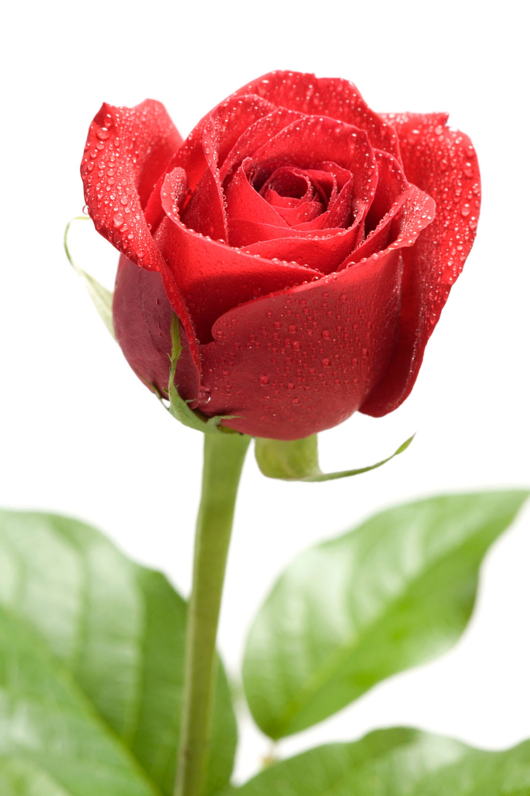

Rose
A rose is either a woody perennial flowering plant of the genus Rosa , [1] in the family Rosaceae [1] or the flower it bears. There are over three hundred species and tens of thousands of cultivars. [citation needed] They form a group of plants that can be erect shrubs, climbing, or trailing, with stems that are often armed with sharp prickles. [2] Their flowers vary in size and shape and are usually large and showy, in colours ranging from white through yellows and reds. Most species are native to Asia, with smaller numbers native to Europe, North America, and northwestern Africa.[2] Species, cultivars and hybrids are all widely grown for their beauty and often are fragrant. Roses have acquired cultural significance in many societies. Rose plants range in size from compact, miniature roses, to climbers that can reach seven meters in height. [2] Different species hybridize easily, and this has been used in the development of the wide range of garden roses.
Tuberose
Tuberose (Polianthes tuberosa L.) is one of the most important tropical ornamental bulbous flowering plants cultivated for the production of long-lasting flower spikes. It is popularly known as Rajanigandha or Nishigandha. It belongs to the family Amaryllidaceae and is native to Mexico.
.jpg)
Hibiscus
Hibiscus[2][3] is a genus of flowering plants in the mallow family, Malvaceae. The genus is quite large, comprising several hundred species that are native to warm temperate, subtropical and tropical regions throughout the world. Member species are renowned for their large, showy flowers and those species are commonly known simply as "hibiscus", or less widely known as rose mallow. Other names include hardy hibiscus, rose of sharon, and tropical hibiscus. The genus includes both annual and perennial herbaceous plants, as well as woody shrubs and small trees. The generic name is derived from the Greek name ἰβίσκος (ibískos) which Pedanius Dioscorides gave to Althaea officinalis
.jpg) "
"